Olá, estudante!
Seja bem-vindo ao estudo da ciência dos fenômenos naturais. Você compreenderá as ciências da natureza e suas tecnologias por meio de um olhar integrado à biologia, à física e à química. Será valorizado o aprofundamento de saberes para a aplicação de diferentes aprendizagens em diferentes contextos sociais, culturais, históricos e de trabalho.
É possível perceber que as ciências da natureza estão presentes de diversas formas na cultura e na vida em sociedade, possibilitando novas compreensões sobre o mundo. Desse modo, associam-se à tecnologia, tomando parte em todos os setores de produção e de serviços: da agropecuária à medicina, da indústria ao sistema financeiro, dos transportes à comunicação e à informação, da produção de armas químicas aos aparelhos domésticos. Essa associação entre as ciências e as tecnologias resultou nas várias revoluções industriais e integra todas as dimensões práticas da vida humana e, consequentemente, molda comportamentos e identidades individuais e coletivas.
Nesta etapa, você encontrará informações científicas sobre diferentes estratégias alimentares e justificativas para diferentes instruções, como “o que comer e o que não comer”. Por exemplo, por que comer alimentos integrais é importante? Por que limitar a ingestão de açúcar, farinha e alimentos ultraprocessados? Em todo caso, é importante salientar que as questões relacionadas com a alimentação devem ser acompanhadas por um profissional de saúde com conhecimento na área, como nutricionistas e médicos, por exemplo.
Próximo: Por que se alimentar?
Você já se perguntou por que sente fome? Provavelmente, sim. É comum, inclusive, sentir-se cansado ou fraco ao não se alimentar bem. Essas sensações são respostas do organismo à falta de algum alimento que deveria ter sido ingerido a fim de garantir a realização de atividades do dia a dia. Ao alimentar-se adequadamente, a execução de atividades é qualificada, garantindo uma vida mais saudável e prazerosa.
A alimentação não está relacionada apenas ao prazer em comer, mas, principalmente, ao provimento da nutrição necessária ao organismo para realizar processos vitais a partir da produção de energia. A necessidade alimentícia está centrada na utilização do alimento pelas células para produzirem energia. A produção energética acontece quando se utiliza um açúcar simples (glicose) juntamente com o gás oxigênio (produto da respiração) no interior das células, onde acontece a liberação de energia e, na sequência, a excreção de resíduos também produzidos nessa reação química.
A alimentação está na base da pirâmide de uma vida saudável, pois é como o corpo processa os nutrientes necessários para a manutenção da vida. Além da produção energética, a alimentação está centrada, também, na renovação celular, conforme o documento divulgado pela Organização Pan-Americana da Saúde – OPAS.
A composição exata de uma dieta diversificada, equilibrada e saudável varia de acordo com as características individuais de cada pessoa (idade, sexo, estilo de vida e grau de atividade física), contexto cultural, alimentos disponíveis localmente e hábitos alimentares. No entanto, os princípios básicos do que constitui uma alimentação saudável permanecem os mesmos para todas e todos (OPAS, 2019).
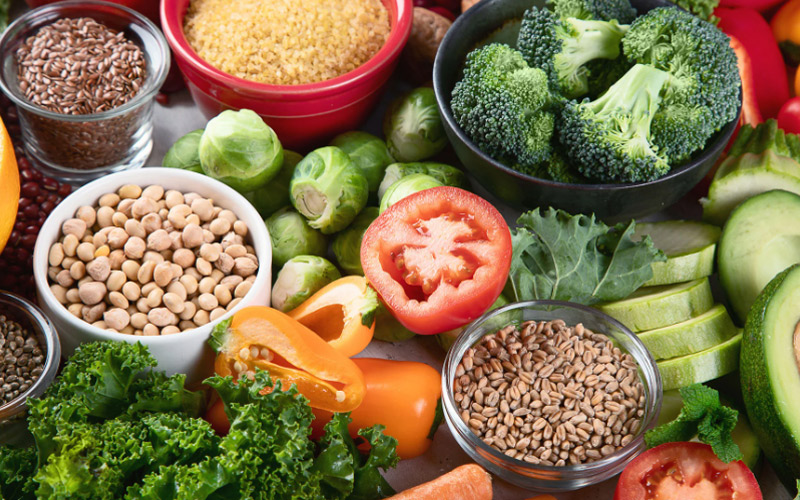
Figura 1 – Alimentos in natura (diversidade de alimentos necessários
ao
corpo)
Fonte: <https://www.paho.org/pt/topicos/alimentacao-saudavel>. Acesso em: 24 mar. 2022.
Não só a OPAS, mas também a Organização Mundial da Saúde – OMS e outras entidades globais, preocupadas com uma vida saudável, falam sobre as necessidades de uma alimentação para proporcionar uma vida digna para qualquer pessoa no planeta. Entretanto, será que existem condições necessárias para uma vida digna disponíveis de maneira global? Entre esse questionamento, também surgem outros.
A seguir, você verá como usar as ferramentas das ciências da natureza para refletir e tentar responder a essas perguntas.
Voltar Próximo: Investigando alimentos da culinária brasileira
A maioria das fontes dos alimentos são encontradas em organismos vivos. Ao comer, ingere-se grupos de substâncias químicas que participam de um sistema amplo que relaciona as substâncias ingeridas àquelas já encontradas no organismo. De tal modo, a alimentação é uma grande e complexa estratégia de interação química no corpo e exige inúmeras transformações e rearranjos nos sistemas corporais. Para além dos aspectos químicos, a alimentação também está relacionada a comportamentos socioculturais, estando vinculada ao modo de vida e à maneira com que os diferentes grupos de seres vivos se conectam e se comunicam.
Os seres humanos obtêm nutrientes por meio dos alimentos para manter seu corpo saudável. Acredita-se que as formas de consumir o alimento e os tipos de alimentos que consumimos foram modificando ao longo da história. À medida que a espécie evoluiu, suas estratégias de consumir o alimento também mudaram, como, por exemplo: em determinado período, em vez de comer apenas raízes e folhas, o ser humano passou a ingerir carne crua e, em seguida, a partir da manipulação do fogo, aprendeu a cozinhar e assar.
O ser humano pré-histórico comia de tudo. Já o moderno age de forma bem diferente. Os israelitas podiam comer gafanhotos, e esses são ainda apreciados em toda a África do Norte. Os hindus não comem carne de vaca, pois acreditam serem sagradas, já para os europeus, ela é indispensável na mesa. Assim, ao acompanhar a evolução do processo alimentar, conclui-se que a cultura tem forte influência na forma com que os alimentos são preparados e consumidos.
Ao investigar a culinária brasileira, é possível identificar a fusão perfeita das diversas culturas que compõem o país. Em cada uma das cinco regiões, podem ser encontrados pratos típicos bem diferentes. Se você gosta de um bom prato e quer saber mais sobre as características marcantes da culinária brasileira, veja a seguir as comidas típicas de cada região!
Clique ou toque para visualizar o conteúdo:
A gastronomia do Sul do país vai muito além do tradicional churrasco. Entre seus muitos pratos típicos, o arroz carreteiro se destaca como um dos favoritos gaúchos. Esse prato faz parte da história do Rio Grande do Sul e surgiu quando o principal meio de transporte de mercadorias eram as carroças puxadas por vacas.
Os carreteiros da época criaram esse prato simples com pouquíssimos ingredientes: o charque, que é uma carne que pode ser conservada para vários dias de viagem, combinado com o arroz, que define a base do prato.
Até pouco tempo atrás, mandioca, acarajé, moqueca e outras iguarias nordestinas não eram encontradas em nenhum lugar do Brasil. Mas, nos últimos anos, a culinária nordestina se popularizou em todo o país. Por exemplo, um prato típico do Ceará é o baião de dois, baseado em tradicionais ingredientes brasileiros, o arroz, o feijão e a carne seca.
As origens do baião remontam ao período seco do Nordeste, quando todas as suas coisas eram cozidas para evitar o desperdício, pois a comida era escassa e nada podia estragar. Hoje o baião de dois também é preparado com queijo queimado, bacon e temperos, como cebola, coentro e louro.
A culinária do Norte do país apresenta pratos com influências indígenas, como peixes e frutas típicas da região, oriundos da vasta riqueza natural da Amazônia. Um dos pratos mais consumidos na região é a mujica de peixe, que consiste em peixes grelhados (de preferência tambaqui) e um guisado temperado engrossado com farinha, servido com arroz branco ou outros acompanhamentos. Esse prato, nativo da região, é muito consumido pelos ribeirinhos, e a ideia é sempre reaproveitar o peixe grelhado da refeição anterior.
Há também influência indígena na culinária do Centro-Oeste do país tanto de índios brasileiros como dos vizinhos paraguaios. No entanto, essa região etnicamente mista também tem uma culinária muito diversificada, com influências de todo o Brasil. Come-se muito peixe, carne vermelha e até mesmo alguma proteína exótica. Um prato popular na região é a sopa paraguaia, que, na verdade, não é uma sopa, mas um bolo salgado à base de fubá.
Por ser uma região que experimentou intensa atividade durante os tempos coloniais do Brasil, o Sudeste é hoje uma boa mistura de culturas. Cada estado tem seus pratos típicos, mas um dos pratos mais deliciosos da região é o famoso feijão tropeiro, feito com feijão, farinha de tapioca, linguiça, casca crocante, alho, cebola, ovos e outros temperos.
As origens do nome remontam aos tropeiros, que eram pessoas que usavam os militares para transportar mercadorias, se reuniam para comer e inventaram o prato, que utilizava todos os ingredientes mais disponíveis na época. Até hoje, esse prato continua sendo um importante elemento das tradições de São Paulo e Minas Gerais.
Veja a seguir a tabela nutricional, com valores aproximados, do feijão tropeiro.
| Tabela Nutricional | %VD | |
|---|---|---|
| Calorias (valor energético) | 22,80 kcal | 1,14% |
| Carboidratos líquidos | 2,40 g | - |
| Carboidratos | 2,94 g | 0,98% |
| Proteínas | 1,53 g | 0,51% |
| Gorduras totais | 1,02 g | 1,85% |
| Gorduras saturadas | 0,33 g | 1,50% |
| Fibra alimentar | 0,54 g | 2,16% |
| Sódio | 0,54 g | 2,16% |
Tabela 1 – Tabela nutricional do feijão tropeiro
Fonte: Adaptado de
<https://vitat.com.br/alimentacao/busca-de-alimentos/alimentos/372-feij%C3%A3o-tropeiro>.
Acesso em: 14 abr. 2022.
Os diferentes alimentos presentes na culinária regional estão relacionados à cultura desses lugares e são ricos em uma série de nutrientes que contribuem para a realização dos processos metabólicos do organismo.
O carboidrato, por exemplo, presente no arroz do carreteiro, na mandioca e nas diferentes frutas é a biomolécula mais abundante na natureza. Entre as várias funções dos carboidratos, a mais importante é a energética. Além de sua importância biológica, os carboidratos são matérias-primas para a indústria alimentícia e são encontrados em uma variedade de alimentos.
Além de suas funções energéticas, também têm funções estruturais, atuando como esqueleto de certos tipos de células, como a celulose e a quitina, que fazem parte dos esqueletos de plantas e animais, respectivamente.
O amido, por exemplo, é um carboidrato de reserva energética para plantas e fungos. Os seres humanos também têm uma substância de armazenamento de energia: o glicogênio, que é armazenado no fígado e nos músculos. Quando o corpo precisa de energia, o glicogênio é hidrolisado em moléculas de glicose, um carboidrato simples com apenas seis átomos de carbono. O glicogênio é o resultado da ligação de milhares de moléculas de glicose, assim como a celulose. Assim, os carboidratos são substâncias extremamente importantes para a vida, e sua principal fonte são as plantas, que produzem carboidratos por meio da fotossíntese. Os vegetais absorvem a energia solar e a convertem em energia química, produzindo carboidratos.
Os lipídios, encontrados nos alimentos, como a gordura de carnes vermelhas e óleos vegetais, são moléculas de gordura formadas por ácidos graxos (moléculas grandes compostas de hidrogênio, carbono e oxigênio, com formação “COOH” no fim da cadeia de carbonos), muito importantes no fornecimento de energia para o corpo, pouco solúveis em água e, portanto, chamadas de hidrofóbicas. Os lipídios também atuam como isolantes térmicos, componentes da membrana plasmática, reservas de energia e na formação estrutural de alguns hormônios. Ao consumir uma quantidade de gordura superior à indicada, o ser humano pode sofrer danos à saúde, como colesterol elevado e outras doenças cardiovasculares.
Mas então qual tipo de gordura deve ser consumido?
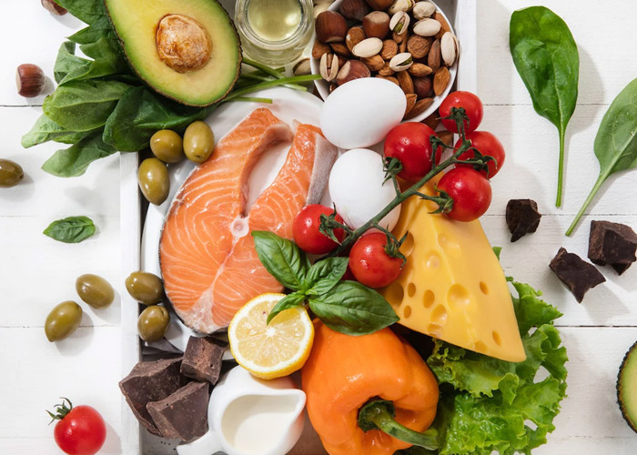
Gordura vegetal
É rica em gorduras insaturadas – livres de colesterol
e gorduras trans. Pode ser
encontrada no abacate, na linhaça e no azeite de oliva, por exemplo, e ajudar a
controlar os níveis de colesterol e prevenir doenças cardiovasculares.
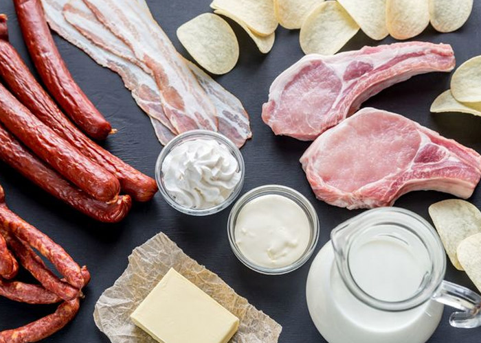
Gordura animal
Composta principalmente por gordura saturada,
colesterol e gordura trans. É
encontrada em carnes, manteiga, creme de leite, leite integral e queijo integral.
Voltar Próximo: A importância do colesterol para a saúde brasileira
Durante os exames de rotina, os médicos geralmente solicitam a dosagem de colesterol no sangue, classificado em:
O colesterol tem sido uma preocupação para médicos e nutricionistas nos últimos anos, pois muitos estudos foram realizados e apontaram para a importância dessa substância, que compõe grande parte do cérebro e é necessária para a saúde das células nervosas.
Do ponto de vista químico, o colesterol é um lipídio, classificado como esteroide. O colesterol e outras gorduras são insolúveis em água, o que também significa que são insolúveis no sangue. Veja a seguir a representação de uma molécula genérica de colesterol.
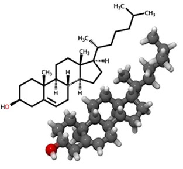
Figura 2 – Molécula de colesterol
Fonte: <https://brasilescola.uol.com.br/quimica/composicao-quimica-colesterol.htm>. Acesso em:
14 abr. 2022.
Voltar Próximo: As principais funções das proteínas brasileira
As proteínas ingeridas a partir dos peixes, das carnes vermelhas, da linguiça e do feijão tropeiro, por exemplo, são substâncias que desempenham as mais diversas funções no organismo, como a formação e a estrutura celular, a atuação enzimática e a contração muscular.
É importante destacar que não existe processo biológico que não envolva proteínas.
A opção de comer frango quando se quer ganhar massa muscular está relacionada à função estrutural das proteínas. Durante algumas atividades, como musculação, ocorrem microlesões nos músculos, e os aminoácidos são usados pelo corpo para recuperação das lesões durante um processo chamado hipertrofia muscular.
O frango, além de ser uma rica fonte de proteína, em comparação com a carne bovina, apresenta outras características importantes, como menos gordura saturada e colesterol e maior valor nutricional, como ferro e zinco.
Lembre-se: diferentes fatores devem ser considerados para determinar se um alimento é mais ou menos saudável.
Essas características fazem do frango uma boa escolha para a construção muscular. No entanto, tal como a batata-doce, apenas parâmetros nutricionais não são suficientes para se chegar a determinadas conclusões. Muitas pessoas começam a fazer "dietas da moda” e não entendem nem refletem sobre seus efeitos ou riscos, tendo apenas como motivação a estética em busca do "corpo perfeito". Uma dieta equilibrada inclui uma variedade de alimentos, de diferentes cores e texturas. Alimentos como peixes, carnes vermelhas menos gordurosas, brócolis e feijão também são ótimas fontes de proteínas e podem ser inseridos na dieta.
Ao refletir sobre as diferentes formas de se preparar os alimentos, como cozinhar um peito de frango ou fritá-lo, é possível entender que as transformações que um mesmo alimento pode passar relacionam-se ao modo de vida e à cultura de determinada população, além da descoberta do fogo e sua utilização para a transformação química de alimentos.
A seguir, você estudará as transformações químicas que podem ocorrer nos alimentos.
Para compreender melhor como funciona o organismo, que transforma os alimentos e as biomoléculas estudadas em energia, é necessário entender como as transformações acontecem ao seu redor. A transformação é uma das principais propriedades dos materiais encontrados na natureza.
Esse poder transformador pode ser usado para produzir novos materiais, preservar alimentos, ganhar energia, combater doenças e muito mais. Nas ciências da natureza, há explicações que permitem sistematizar o conhecimento sobre as transformações ou, como são chamadas: as reações químicas.
As reações acontecem a todo momento, por exemplo, durante cada respiração e também em milhares de vezes durante o uso de componentes eletrônicos, como celulares e computadores.
Uma reação pode ser identificada por sua evidência visual, que geralmente é algum tipo de mudança ocorrido no material. Você consegue perceber alguma reação química em um bolo, como na imagem a seguir?
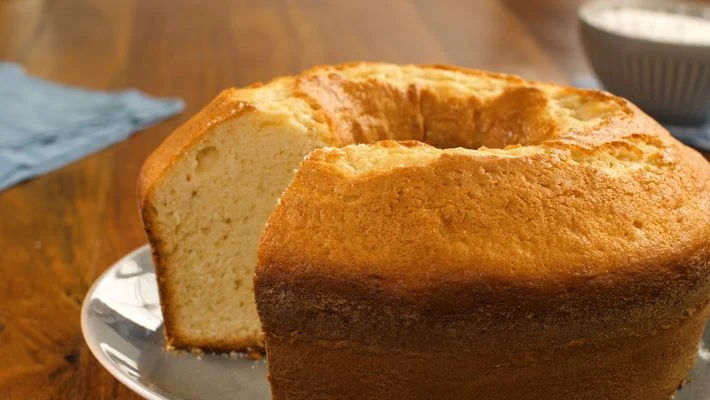
Figura 3 – Bolo assado
Fonte: <https://www.tudogostoso.com.br/receita/29124-bolo-simples.html> Acesso em: 23 fev.
2022.
Em um bolo, os ingredientes se misturam e, sob forte calor, sofrem reações químicas que transformam uma massa disforme e difícil de digerir em um alimento gostoso e nutritivo.
A transformação e a reação dos múltiplos ingredientes do bolo é fácil de ver. Sua cor dourada, quando pronto, é um indicativo de várias transformações que ocorreram nas moléculas que o formam. Especificamente esse processo que “doura” o bolo, é possível ver diariamente, mas sem reparar. Analise esse fenômeno mais de perto assistindo ao vídeo a seguir: A reação de Maillard.
As reações são transformações da matéria ao redor, em que uma substância se transforma em outra e ocorre necessariamente a quebra de ligações de um composto e a formação de novas ligações. O primeiro composto é chamado de reagente e os compostos finais, de produtos. Veja o exemplo seguir:
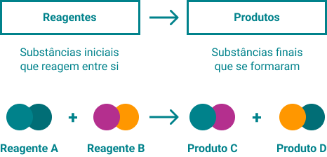
Figura 4 – Reação química
Fonte: Sesc EJA EAD (2022).
Essa maneira de descrever uma transformação é chamada de equação química. Ela demonstra que houve uma mudança estrutural nas substâncias, evidenciando assim uma reação/transformação. Não serão analisadas as reações complexas agora, o importante é perceber que essas transformações acontecem todo dia à sua volta e são importantíssimas.
Observe com atenção, no seu dia a dia, as reações químicas que ocorrem durante atividades, como cozinhar, limpar e se movimentar. Você poderia dizer se essas reações químicas liberam ou consomem energia?
As reações fazem parte da vida constantemente, desde as transformações químicas para a quebra de nutrientes alimentares até a transformação química dos alimentos que ocorre nas diferentes maneiras de prepará-los.
As reações e as transformações podem explicar a mudança dos alimentos crus até seu cozimento. As transformações também podem explicar como um alimento é capaz de fornecer energia para o corpo.
Durante as transformações, as moléculas podem ser quebradas e reorganizadas para absorver ou liberar energia. Por exemplo, durante a queima de combustíveis, como carvão, gasolina ou gás de cozinha, ocorre liberação de energia. Essa energia, chamada de energia térmica, se apresenta como fogo e pode ser medida.
Da mesma forma, a quebra dos alimentos durante a digestão, e dos nutrientes pelas células, libera energia térmica que pode ser expressa em calorias (cal) ou quilocalorias (kcal). Você está familiarizado com as calorias dos alimentos?
“A ingestão calórica deve estar em equilíbrio com o gasto calórico” (OPAS, 2019).
Observe na imagem a seguir os valores nutricionais presentes em uma caixa de leite. Repare no valor da energia que esse alimento pode liberar quando ingerido em determinada porção.
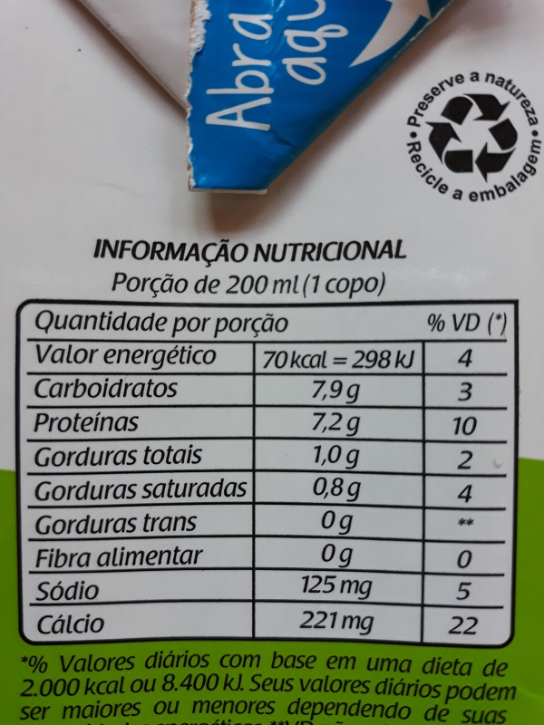
Figura 5 – Rótulo de leite com informação nutricional
Fonte:
<https://pt.khanacademy.org/science/5-ano/vida-e-evoluo-alimentao/nutricao/a/calorias-e-quilocalorias>.
Acesso em: 2 mar. 2022.
Segundo as informações apresentadas no rótulo, uma porção de 200mL de leite contém energia potencial de 70kcal (ou 298kJ). Esse alimento pode ser metabolizado pelo organismo em reações químicas para que forneça essa energia disponível ao organismo.
Caloria é um termo utilizado para a medida de calor/energia liberado em uma transformação química. Para se calcular as calorias dos alimentos, eles são colocados dentro de um equipamento chamado calorímetro, como você pode ver no esquema a seguir:
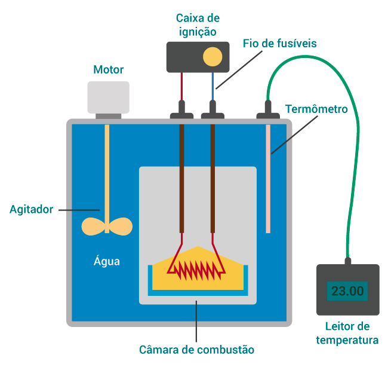
Figura 6 – Calorímetro
Fonte: <https://pt.dreamstime.com/illustration/calorimetro.html>. Acesso em: 18 mar. 2022.
O calorímetro funciona da seguinte forma: uma amostra do alimento é queimada dentro de uma câmara mergulhada na água. À medida que o alimento queima, ele perde sua energia em forma de calor e aquece a água. Para obter o resultado, mede-se a temperatura inicial e a final da água a fim de descobrir o calor específico do alimento (ou as calorias).
De forma semelhante, o corpo “queima” os alimentos e os transforma em energia. Mas como as calorias são “usadas” pelo organismo? Ao comer algo, costuma-se dizer que se ingere calorias. Na realidade, o alimento passa por uma série de processos de transformação dentro do organismo, e esses processos liberam a energia que o corpo necessita, além de liberar os nutrientes necessários ao funcionamento do organismo.
Quer saber mais sobre essa reação química? Assista ao vídeo a seguir e compreenda, com mais detalhes, a produção de energia no interior das células.
Ou seja, a alimentação e a respiração produzem combustível por meio das calorias que são ingeridas.
Você pôde entender até aqui que a alimentação é importante. Contudo, é necessário refletir sobre como balancear o que é ingerido, levando em conta os produtos alimentícios adquiridos. O corpo precisa de proteínas, vitaminas e minerais para se manter regulado, além disso, eles são essenciais em diversos momentos, como na construção dos músculos, na proteção dos ossos e na produção de hormônios. Quando há a falta de algum desses grupos de alimentos, o corpo não funciona corretamente ou na sua melhor forma. Os efeitos de uma alimentação desbalanceada podem ser: sono em excesso, má digestão, desatenção, raciocínio lento e, até mesmo, indisposição para atividades.
Talvez você já tenha ouvido que quanto mais colorido for o prato de comida, melhor. Inicialmente, pense sobre como alimentar-se além do paladar. Um alimento bonito é mais chamativo e interessante do que um feio e de cor pálida. Mesmo que seja um prato que você nunca experimentou ou com ingredientes que você não gosta, por seu visual, torna-se mais desejado. Qual dos pratos a seguir é mais atrativo para você?
Clique ou toque para visualizar o conteúdo.
Alimentos com as mesmas cores
Alimentos com cores diferentes
As cores não são somente para embelezar o prato, mas indicam composições diferentes de vitaminas, minerais e substâncias bioativas e antioxidantes, como indica a Abeso (Associação Brasileira para o Estudo da Obesidade e Síndrome Metabólica). Nutricionistas indicam pelo menos cinco cores diferentes no prato. Isso não significa que um prato montado da mesma cor não tenha nenhum valor nutricional, mas indica que você escolheu alimentos do mesmo grupo alimentar, como batata e massa
A seguir, alguns exemplos de alimentos separados por grupos de cores:
Vermelho: tomate, morango, pimentão, pimenta, melancia
Verde: brócolis, abobrinha, abacate, alface, agrião, rúcula
Roxo: berinjela, uva, repolho, beterraba
Amarelo: maracujá, pimentão, abacaxi, melão, milho
Branco: mandioca, batata, alho, cebola, couve-flor, leite
Marrom: carnes e leguminosas, como feijão e grão-de-bico
Laranja: cenoura, abóbora, laranja, acerola, mamão
Com essa análise das cores dos alimentos, fica mais fácil montar um prato saudável. Agora você pode verificar também os alimentos industrializados que consome e como fazer escolhas melhores. Anteriormente, você pôde observar um rótulo de alimento com informações nutricionais, com destaque para suas calorias, agora será examinado além do valor energético.
Sempre que você for escolher um produto, comece por seus ingredientes. Os itens com maior quantidade aparecem primeiramente na lista. Se você for alérgico ou intolerante a algum item da lista, leve isso em consideração, pois poderá haver uma reação alérgica. Evite alimentos com ingredientes de nomes como benzoato de sódio, hidroxianisol butilado ou hidroxitolueno butilado, pois esses compostos têm por finalidade melhorar o aspecto e a durabilidade dos alimentos, sem agregar valor nutricional. Quanto menor a lista de ingredientes, menos processado o alimento será, portanto mais saudável.
Observe as recomendações do Ministério da Saúde, levando em consideração diferentes processos de produção de alimentos.
Clique ou toque para visualizar o conteúdo:
Na escolha dos alimentos, o tipo de processamento sofrido por ele interfere em seu sabor e sua qualidade nutricional. Os alimentos podem ser classificados em:
Alimentos in natura e minimamente processados
Base ideal para uma alimentação adequada e saudável
Obtidos de plantas ou animais e adquiridos para consumo sem terem sofrido processamento.
Alimentos in natura que sofreram alterações mínimas na indústria, como moagem, secagem, pasteurização etc.
Exemplos: verduras, legumes e frutas (frescas ou secas); tubérculos (batata, mandioca etc.); arroz; milho (em grão ou na espiga); cereais; farinhas; feijão e outras leguminosas; cogumelos (frescos ou secos); sucos de frutas (sem açúcar ou outras substâncias); leite; iogurte (sem açúcar ou outras substâncias); ovos; carnes; pescados; frutos do mar; castanhas (sem sal e açúcar); especiarias e ervas frescas ou secas; macarrão ou massas (feitas com farinhas e água); chá, café e água.
Utilizar em pequenas quantidades, pois são produtos alimentícios usados para temperar e cozinhar alimentos. Se utilizados com moderação em preparações culinárias, baseadas em alimentos in natura e minimamente processados, podem tornar a alimentação mais saborosa, mantendo seu equilíbrio nutricional.
Exemplos: óleos vegetais, azeite, manteiga, banha de porco, gordura de coco, açúcar de mesa branco, demerara ou mascavo, melado, rapadura e sal de cozinha.
Limitar o consumo, pois são produtos fabricados com a adição de sal, açúcar, óleo ou vinagre, o que os torna desequilibrados nutricionalmente. Por isso, seu consumo pode elevar o risco de doenças, como as do coração, obesidade e diabetes.
Exemplos: enlatados e conservas; extratos ou concentrados de tomate; frutas em calda e cristalizadas; castanhas adicionadas de sela ou açúcar; carnes salgadas; queijos e pães (feitos com farinha de trigo, leveduras, água e sal).
Evitar o consumo, pois são formulações industriais feitas tipicamente com cinco ou mais ingredientes. Em geral, são pobres nutricionalmente e ricos em calorias, açúcar, gorduras, sal e aditivos químicos, com sabor realçado e maior prazo de validade. Podem favorecer a ocorrência de deficiências nutricionais, obesidade, doenças do coração e diabetes.
Exemplos: biscoitos, sorvetes e guloseimas; bolos; cereais matinais; barras de cereais; sopas, macarrão e temperos “instantâneos”; salgadinhos “de pacote”; refrescos e refrigerantes; achocolatados; iogurtes e bebidas lácteas adoçadas; bebidas energéticas; caldos com sabor carne, frango ou de legumes; maionese e outros molhos prontos; produtos congelados e prontos para consumo (massas, pizzas, hambúrgueres, nuggets, salsichas etc.); pães de forma, pães doces e produtos de panificação com substâncias como gordura vegetal hidrogenada, açúcar e outros aditivos químicos.
Voltar Próximo: Análise dos rótulos dos alimentos
Após um olhar atento à lista de ingredientes, chegou a hora de contemplar a tabela de informação nutricional. Deixe o valor energético como último item de escolha em um produto alimentício, pois nem sempre aquele com menos calorias será o mais saudável. Opte por um alimento com o maior nível de fibras possível e evite aqueles com gordura saturada. Quanto às gorduras totais, busque aqueles com no máximo 5g para cada 100g de produto, pois, posteriormente, você verá os tipos de gordura e entenderá a importância de alguns.
Clique ou toque para visualizar.
Conforme os conhecimentos vistos até aqui, será analisado um dos produtos mais consumidos no mundo, o pão. Na tabela a seguir, há dois rótulos de diferentes tipos de pão, um de forma e outro integral. Os dois tipos têm muitos ingredientes, incluindo conservantes, que não são benéficos para a saúde, de acordo com o estudado até então. É possível perceber que o pão integral é mais calórico e tem mais gorduras que o pão de forma. Nesse caso específico, a única vantagem do pão integral é o valor superior de fibras, que facilita o processo digestivo.
|
Pão de forma |
Pão integral |
||||||
|---|---|---|---|---|---|---|---|
|
Lista de ingredientes: farinha de trigo enriquecida com ferro e ácido fólico, açúcar, óleo de soja, glúten, sal, sal hipossódico, conservadores propionato de cálcio e sorbato de potássio, emulsificante estearoil-2-lactil lactato de sódio e melhorador de farinha ácido ascórbico. |
Lista de ingredientes: farinha de trigo integral, farinha de trigo enriquecida com ferro e ácido fólico, glúten, castanha-do-pará, fibra de trigo, açúcar, óleo de soja, sementes de girassol, açúcar mascavo, nozes-pecã, farinha de linhaça, sal e conservadores propionato de cálcio e sorbato de potássio. |
||||||
|
INFORMAÇÃO NUTRICIONAL Porção de 50g (2 fatias) |
INFORMAÇÃO NUTRICIONAL Porção de 50g (1,5 fatias) |
||||||
| Quantidade por porção | %VD (*) | Quantidade por porção | %VD (*) | ||||
| Valor energético | 126kcal | 6 | Valor energético | 140kcal | 7 | ||
| Gorduras monoinsaturadas | 0,2g | ** | Gorduras monoinsaturadas | 1,6g | ** | ||
| Carboidratos | 25g | 8 | Carboidratos | 19g | 6 | ||
| Gorduras poli-insaturadas | 0,4g | ** | Gorduras poli-insaturadas | 1,5g | ** | ||
| Proteínas | 4,5g | 6 | Proteínas | 7,0g | 9 | ||
| Colesterol | 0mg | 0 | Colesterol | 0mg | 0 | ||
| Gorduras totais | 0,9g | 2 | Gorduras totais | 3,9g | 7 | ||
| Fibra alimentar | 1,2g | 5 | Fibra alimentar | 3,0g | 12 | ||
| Gorduras saturadas | 0g | 0 | Gorduras saturadas | 0,8g | 4 | ||
| Sódio | 182mg | 8 | Sódio | 162mg | 7 | ||
| Gorduras trans | 0g | ** | Gorduras trans | 0g | ** | ||
|
(*) % Valores Diários com base em uma dieta de 2.000 kcal ou
8400 kJ.
|
|||||||
Tabela 2 – Tipos de pão
Fonte: Sesc EJA EAD (2022).
Agora você pode fazer sua própria análise. Procure ler diferentes rótulos na sua casa e identifique as informações nutricionais. Quantas kcal (ou Cal com C maiúsculo) são fornecidas por porção? E quantas são fornecidas se você consumir todo o conteúdo da embalagem? Compare com o consumo diário médio de calorias de uma pessoa.
Além dos problemas de saúde apresentados anteriormente e os diferentes tipos de colesterol, algumas outras questões vinculadas à estética corporal têm se tornado relevantes na atualidade. É comum observar adolescentes, adultos e até crianças deslumbradas com o padrão de beleza estabelecido pela mídia a partir de influenciadores digitais, tiktokers e outros. O padrão estabelecido está comumente vinculado a um corpo musculoso, totalmente definido e/ou completamente magro. O texto a seguir traz uma reflexão acerca da saúde e da estética corporal.
Aproveite para refletir sobre suas escolhas alimentares e sua motivação para uma alimentação saudável e equilibrada.
Voltar Próximo: A saúde e a estética corporal
É importante saber que, muitas vezes, a discussão sobre alimentação balanceada e saudável é motivada por diversos fatores. Destes, os mais comuns são os cuidados com a saúde e os cuidados com o corpo. Segundo a Organização Mundial da Saúde (OMS), quando o assunto é saúde, os transtornos do comportamento alimentar têm aumentado em muitos países.
No Brasil, segundo o relatório da Pesquisa de Vigilância de Fatores de Risco e Proteção para Doenças crônicas por Inquérito Telefônico (Vigitel), do Ministério da Saúde, o número de pessoas com sobrepeso e obesidade aumentou 67,8% entre 2006 e 2018. Esse é um aumento preocupante, pois a obesidade é um fator de risco para várias outras doenças, como diabetes, doenças cardiovasculares e problemas como artrite e artrose.
Além da obesidade, pessoas com anorexia ou bulimia desenvolvem foco excessivo no corpo, assumindo percepções distorcidas da forma do próprio corpo e relacionando a autoestima ao próprio peso corporal. Esses transtornos resultam em alterações nos eletrólitos corporais, inflamação gastrointestinal e até mesmo desnutrição.
Grande parte dessas doenças estão relacionadas com a busca pelo "corpo perfeito". Esse padrão, em geral, no caso das mulheres, corresponde à magreza e nem sempre leva em consideração aspectos relacionados à saúde. Nos homens, geralmente, envolve um aumento da massa muscular e do tecido muscular definido, que, às vezes, é alcançado com o uso de substâncias que apresentam alto risco à saúde, como esteroides anabolizantes.
Conforme a ótica de Alexandre Beck, por meio de seu protagonista Armandinho, a imagem a seguir ironiza a idealização de um corpo perfeito.
Figura 7 – Idealização de corpo perfeito
Fonte:
<https://www.facebook.com/page/488356901209621/search/?q=dia%20do%20educador%20>. Acesso em:
14 abr. 2022.
No entanto, a preocupação com a forma do corpo não é novidade. Ao longo da história humana, relatos dessa busca sugerem que, até certo ponto, a beleza é relativa. Em diferentes épocas e culturas, os padrões de beleza mudaram, e isso está intimamente relacionado à disponibilidade de alimentos e à classe social.
Idade Média – Século V ao XV
Ao olhar registros medievais, vê-se que a magreza é sinônimo de pobreza e doença. Corpo com mais volume significava abundância e riqueza e, portanto, beleza.
Revolução Industrial – Século XIX
Desde a Revolução Industrial no século 19, as pessoas têm cada vez mais acesso a alimentos diversificados e, com esse fenômeno, a obesidade aumentou.
Século XX
Esses fatores estão moldando o comportamento alimentar na sociedade ao longo do século 20 e ligando a magreza à beleza e ao autocontrole. Assim, "comer bem" continua associado a aspectos econômicos e sociais, porém com outros significados. Pessoas com tempo e dinheiro para “esculpir” o próprio corpo passaram a ser o modelo de beleza.
No Brasil, por exemplo, o padrão de beleza é caracterizado por um processo ocidental, e você poderá encontrar mais informações sobre esse assunto nos textos: Imagem corporal e distúrbios alimentares: análise das opiniões de alunos do ensino médio, Revista Multidisciplinar da Saúde (RMS); e The history of the “ideal” woman and where that has left us, CNN.
Além da bibliografia sugerida, essa temática poderá ser melhor compreendida no material de Ciências Humanas, pois nesse espaço são discutidas temáticas como a globalização, a cultura e as fronteiras culturais.
Essa mudança cria muitos problemas psicológicos, especialmente entre os jovens. Os jovens que atingem um certo nível de massa muscular tornam-se um marcador de sucesso e felicidade, gerando disparidade social. Muitas pessoas acreditam que obtendo o "corpo perfeito" serão amadas e “seguidas”. O mais importante é o equilíbrio e a saúde em primeiro lugar.
Qualquer pessoa pode optar por buscar o que achar mais bonito, porém deve sempre estar atenta a uma alimentação saudável e equilibrada. Hábitos alimentares irregulares, alto consumo de alimentos industrializados, adesão às “dietas da moda” sem reflexão e uso de substâncias ilícitas são alguns dos comportamentos que devem ser repensados e discutidos.
Voltar Próximo: Transtornos alimentares
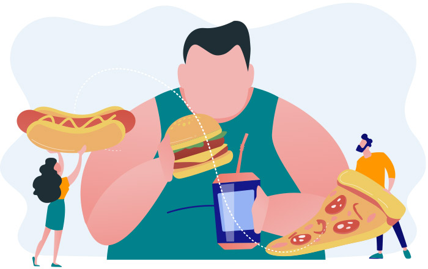
Os transtornos alimentares são condições preocupantes relacionadas a comportamentos alimentares recorrentes que afetam negativamente a saúde, as emoções e a capacidade de atuar em áreas importantes da vida.
Os transtornos alimentares mais comuns são:
Clique ou toque para visualizar o conteúdo
Medo obsessivo de ganhar peso, recusa em manter um peso corporal saudável e uma percepção irreal da imagem corporal.
Compulsão alimentar repetida, seguida por comportamentos que compensam os excessos, como vômitos forçados, exercícios excessivos ou uso frequente de laxantes ou diuréticos (esses indivíduos frequentemente perdem o controle sobre sua alimentação).
Medo obsessivo de ganhar peso, recusa em manter um peso corporal saudável e uma percepção irreal da imagem corporal.
Compulsão alimentar repetida, seguida por comportamentos que compensam os excessos, como vômitos forçados, exercícios excessivos ou uso frequente de laxantes ou diuréticos (esses indivíduos frequentemente perdem o controle sobre sua alimentação).
Segundo o doutor Augusto Pimazoni, endocrinologista clínico pela Universidade Federal de São Paulo:
Os transtornos estão vinculados à ingestão inadequada ou excessiva de alimentos, o que pode, em última instância, prejudicar o bem-estar de um indivíduo. As formas mais comuns de transtornos alimentares afetam tanto mulheres quanto homens. Transtornos alimentares podem se desenvolver durante qualquer fase da vida, mas geralmente aparecem durante a adolescência ou na idade adulta jovem. Classificados como uma doença médica, o tratamento adequado pode ser altamente eficaz para muitos dos tipos específicos de distúrbios alimentares.
Diferentemente da bulimia, episódios de compulsão alimentar não são seguidos por comportamentos compensatórios, como vômitos forçados, jejum ou exercícios excessivos. Por causa disso, muitas pessoas que sofrem dessa condição podem ser obesas e com maior risco de desenvolver outras condições, como doenças cardiovasculares.
Normalmente, a desinformação sobre a ingestão de alimentos supergordurosos pode colaborar para o adoecimento do corpo. As gorduras trans, por exemplo, são gorduras (lipídios) de interesse da população, pois estão relacionadas às preocupações crescentes sobre os efeitos na saúde. Apesar de ser alvo de atenção, é importante notar que a gordura, muitas vezes, desempenha um papel importante em no corpo, por isso a Organização Mundial da Saúde recomenda que a ingestão diária de gordura seja equivalente a cerca de 30% do valor calórico total.
Voltar Próximo: Da alimentação à atividade física
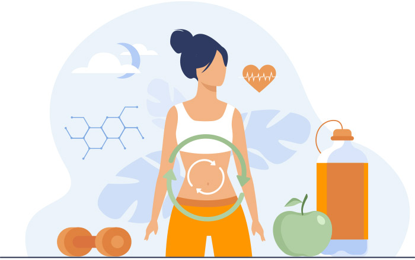
A alimentação é importante, mas qual a sua ligação com uma vida saudável? Pode-se dizer que o corpo é como uma máquina e, portanto, exige manutenções e um combustível para funcionar.
Quanto melhor a qualidade do alimento (combustível), melhor será a qualidade do desempenho do corpo (máquina). O corpo está sempre em atividade, mesmo ao dormir, então seu gasto energético pode variar para mais ou para menos, porém nunca é zero. Agora, imagine todas as suas atividades diárias, como cozinhar, limpar, trabalhar, puxar, empurrar, correr, caminhar e pensar. Cada uma delas tem uma determinada intensidade e um gasto energético diferente.
Conhecendo a origem da história humana ao longo do tempo, sabe-se que a realidade de hoje é bem diferente do que há dez mil anos. Não há mais a necessidade de caçar, coletar alimentos, construir abrigos ou ainda lutar pela manutenção de uma posição na cadeia alimentar. Entretanto, o consumo energético do corpo não mudou. Assim, sem esses fatores e atividades do passado, o corpo acaba acumulando mais energia, em forma de gordura, por exemplo.
Problemas graves de saúde pública, como obesidade e sedentarismo, têm sido fatores relevantes na sociedade. Estudos apontam a necessidade, além da alimentação saudável, de exercícios periódicos, pois, apesar da evolução humana, o funcionamento do organismo ainda é muito próximo aos tempos primitivos.
As atividades físicas têm, além dos benefícios à saúde, um importante papel social e de prazer pessoal. Durante uma prática esportiva, é comum criar e aprimorar laços afetivos e, no final, há uma descarga de endorfina, o hormônio responsável pela sensação de bem-estar no cérebro. Enquanto para a maioria é uma prática de lazer e manutenção da saúde física, para outros torna-se profissão. Os atletas de alto desempenho dedicam seu tempo a aprender, aprimorar e praticar técnicas que melhorem sua performance.
Uma atividade física que faz parte tanto do cotidiano quanto de competições é o ato de se locomover. Independentemente do meio utilizado, é uma das atividades mais comuns entre humanos. Pode ser por meio de equipamentos, como skate, bicicleta, cadeira de rodas, ou por meio do próprio corpo, caminhando, correndo e pulando. Em qualquer dos meios utilizados, gasta-se energia essa atividade.
Essa energia, que envolve movimento, é chamada de energia cinética. Esse conceito envolve, além de velocidade, a massa do corpo que se move.
Dois dos esportes mais acessíveis e recomendados por especialistas são a caminhada e a corrida. Como é possível praticá-los em diversos ambientes, tornaram-se as atividades favoritas das pessoas preocupadas com a saúde. Lembrando que, quanto maior a velocidade, maior a energia. A corrida é aquela que representa a maior transformação energética no corpo, sendo o exercício escolhido por praticantes com intuito de um gasto calórico maior que a caminhada. Importante procurar profissionais para não errar na execução dos exercícios e para os cuidados com a saúde individual.
A energia cinética não está relacionada somente ao corpo humano, mas sim com tudo que se move. Como essa energia está relacionada diretamente com a massa e a velocidade, também pode-se associá-la à energia de um carro em movimento, que, além de atingir alta velocidade, tem uma massa considerável. Até mesmo corpos considerados leves podem conter grande energia cinética. Um exemplo é o projétil de uma arma de fogo, que, mesmo com pouca massa, atinge altíssimas velocidades. Veja o exemplo de um carro na imagem a seguir.
Figura 8 – Teste de acidente veicular
Fonte:
<https://quatrorodas.abril.com.br/wp-content/uploads/2018/05/od0818fto1_oncrash_cam7.jpg?resize=650,382>.
Acesso em: 20 abr. 2022.
O corpo humano pode transformar a energia dos alimentos para realizar inúmeras tarefas, com intenção, como pular e correr. Além dessas, o uso da força é aplicado também em diversos momentos da vida, como levantar uma caixa, segurar uma sacola, realizar uma mudança, carregar um filho, empurrar um balanço, chutar uma bola, entre outras. Provavelmente, você já experimentou empurrar, puxar ou levantar objetos de diferentes massas, como um balde ou uma folha de papel. Objetos com maior massa exigem mais força para movimentá-los, logo, mais energia.
Clique ou toque para visualizar o conteúdo
Isaac Newton foi um matemático, físico, astrônomo, teólogo e autor inglês (descrito em seus dias como um "filósofo natural") que é amplamente reconhecido como um dos cientistas mais influentes de todos os tempos e como uma figura-chave na Revolução Científica.
Físico no século 17, conseguiu relacionar que a força é a multiplicação da massa pela aceleração, sendo esta conhecida como a lei da dinâmica ou também 2ª lei de Newton. De acordo com o raciocínio das transformações, analise o exemplo a seguir.
A imagem mostra um fluxograma chamado “Empurrar uma geladeira”, começando pelo item “ingerir o alimento”, seguido de uma seta para a direita com o item “metabolismo processando”, o próximo passo abaixo é “energia é armazenada no corpo”, seguido de “força no braço” e, por fim, “empurramos a geladeira”, com três setas pretas apontando para uma geladeira verde à direita.
Fluxograma 1 – O caminho da alimentação até o ato de empurrar uma geladeira
Fonte: Sesc EJA EAD (2022).
Você pode ter percebido que até aqui foram descritos movimentos que você comanda por meio do seu desejo e vontade, como correr, caminhar, levantar, chutar, entre outros. Mas existem também outras atividades involuntárias, aquelas que você não controla diretamente, como respirar, dormir, bombear o sangue e manter a temperatura corporal ideal. Então, você deve estar pensando “Como todas as atividades do corpo se transformam em energia, as involuntárias também”. Sim, você está certo!
A maioria das atividades autônomas citadas são de baixo consumo energético, mas não descartam a necessidade de combustível para sua realização.
Voltar Próximo: Temperatura corporal
É importante saber diferenciar o conceito de temperatura do de calor. Enquanto a temperatura trata da medida do grau de agitação das moléculas, o calor é a energia térmica que flui de um corpo para outro.
Cada ser vivo tem uma temperatura ideal para que o corpo funcione de maneira correta. Nos humanos, a temperatura ideal é em torno de 37 ºC (Celsius). Evidencia-se então mais uma transformação energética, em que a energia armazenada no corpo se transforma em calor.
O que acontece para que seja possível sentir se algo está quente ou frio?
Essa pergunta só pode ser respondida analisando o corpo e o ambiente onde ele está.
A lei zero da termodinâmica diz que o calor (energia) só pode fluir naturalmente de um corpo de temperatura maior para outro de temperatura menor e, ainda, também comenta sobre o fato de não ocorrer transferência de energia entre corpos que estão em equilíbrio. O que significa que, ao sentir frio, na verdade, o corpo está com uma temperatura maior que o ambiente e, portanto o calor sai do corpo. Porém, se o dia está quente, o corpo está com uma temperatura menor que a do ambiente, logo o calor está entrando no corpo. Observe a seguir o que ocorre no cérebro ao perceber as variações de temperatura e calor.
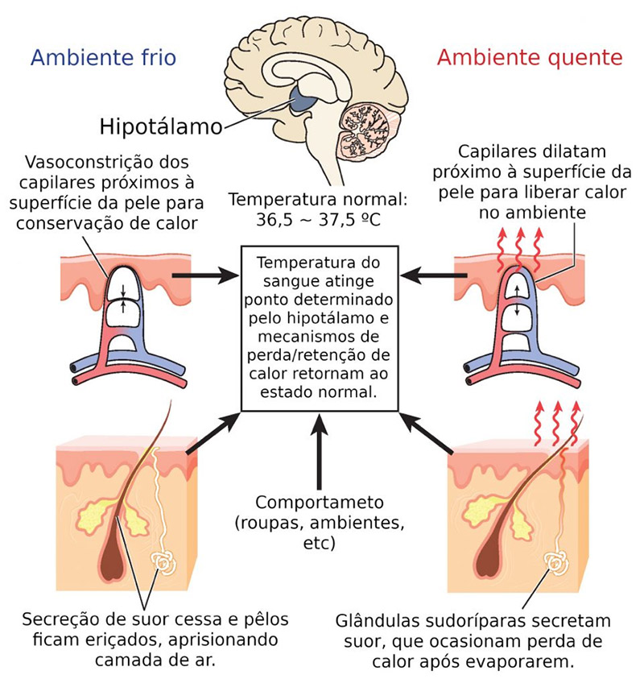
Figura 9 – Termorregulação
Fonte: <https://www.infoescola.com/fisiologia/temperatura-corporal/>. Acesso em: 20 abr. 2022.
Ao refletir sobre os diferentes tipos de energia, apresentados anteriormente, é perceptível que a energia não termina, mas se transforma. Ao estudar a energia química, pode-se compreender, a partir das transformações químicas que ocorrem no corpo dos seres vivos, que os alimentos atuam como o principal combustível para que essas reações ocorram. Então, as energias físicas se transformam em ações do corpo. Essas relações de distribuição e transformação de energia não ocorrem apenas com os seres humanos, mas com qualquer espécie vivente.
O cabo de guerra é uma brincadeira em que também é possível aplicar os conceitos de força. Por meio da união dos companheiros de time, o objetivo é pegar a bandeira central puxando o time adversário. Na imagem a seguir, é possível visualizar que o time azul (da esquerda) tem um número maior de pessoas, mas o time vermelho (da direita) é mais forte mesmo com menos pessoas, portanto está vencendo o cabo de guerra.
Figura 10 – Cabo de guerra
Fonte: Adaptado de
<https://phet.colorado.edu/sims/html/forces-and-motion-basics/latest/forces-and-motion-basics_pt_BR.html>.
Acesso em: 14 abr. 2022.
Durante o dia, são executadas atividades simples, como andar, correr e nadar, em que se avança para a frente. Além dessas, o skate é um exemplo interessante. Para impulsionar o corpo para frente, deve-se chutar o pé para trás, conforme demonstra a figura a seguir.
Figura 11 – Representação de ação e reação no skate Fonte: <https://unsplash.com/photos/y9ctpaxexTI>. Acesso em: 14 abr. 2022.
Neste contexto, percebe-se que existe uma força para um lado e um movimento para outro, tendo o efeito de ação e reação. Esse fenômeno é conhecido como a 3ª lei de Newton, em que toda ação tem uma reação de igual intensidade, mas de sentido contrário.
Para uma leitura complementar, pesquise sobre as diferentes modalidades esportivas das olimpíadas e associe-as aos conceitos vistos nesta etapa.
ABREU, Dalton Mendes de. Reação de Maillard nos alimentos: uma breve introdução. PetQuímica UFC. Disponível em: <http://www.petquimica.ufc.br/reacao-de-maillard-nos-alimentos-uma-breve-introducao/>. Acesso em: 3 mar. 2022.
ARMANDINHO. 1º de setembro, dia do Educador Físico. 1.º set. 2020. Facebook: Armandinho. Disponível em: <https://www.facebook.com/page/488356901209621/search/?q=dia%20do%20educador%20>. Acesso em: 14 abr. 2022.
BRASIL. Ministério da Educação. Ciências da Natureza e suas tecnologias. Disponível em: <https://www.gov.br/mec/pt-br/novo-ensino-medio/itinerarios-formativos-do-novo-ensino-medio/ciencias-da-natureza-e-suas-tecnologias>. Acesso em: 24 fev. 2022.
BRASIL. Ministério da Saúde. Biblioteca Virtual em Saúde. Guia Alimentar para a População Brasileira. Disponível em: <https://bvsms.saude.gov.br/bvs/folder/escolha_dos_alimentos.pdf>. Acesso em: 14 abr. 2022.
BRASIL. Ministério da Saúde. Secretaria de Vigilância em Saúde. Vigitel Brasil 2019: vigilância de fatores de risco e proteção para doenças crônicas por inquérito telefônico. Disponível em: <http://bvsms.saude.gov.br/bvs/publicacoes/vigitel_brasil_2019_vigilancia_fatores_risco.pdf>. Acesso em: 20 abr. 2022.
CALORIAS e quilocalorias. Khan Academy. [S.d.]. Disponível em: <https://pt.khanacademy.org/science/5-ano/vida-e-evoluo-alimentao/nutricao/a/calorias-e-quilocalorias>. Acesso em: 2 mar. 2022.
CALORÍMETRO ilustrações e vetores. Dreamstime. Disponível em: <https://pt.dreamstime.com/illustration/calorimetro.html>. Acesso em: 18 mar. 2022.
CARBOIDRATOS. Revista Food Ingredients Brasil, n. 20, 2012. Disponível em: <http://revista-fi.com.br/upload_arquivos/201606/2016060465316001467141501.pdf>. Acesso em: 14 abr. 2022.
CARBOIDRATOS: principais fornecedores de energia. Só Biologia. Disponível em: <https://www.sobiologia.com.br/conteudos/quimica_vida/quimica.php>. Acesso em: 14 abr. 2022.
CHASSOT, Attico; VENQUIARUTO, Luciana Dornelles; DALLAGO, Rogério Marcos. De olho nos rótulos: compreendendo a unidade caloria. Química Nova na Escola, n. 21, 2005, p.10-13. Disponível em: <http://qnesc.sbq.org.br/online/qnesc21/v21a02.pdf>. Acesso em: 3 mar. 2022.
DEXTRO, Rafael Barty. Temperatura corporal. Infoescola, c2066-2022. Disponível em: https://www.infoescola.com/fisiologia/temperatura-corporal/. Acesso em: 20 abr. 2022.
FEIJÃO tropeiro. Vitat. Disponível em: <https://vitat.com.br/alimentacao/busca-de-alimentos/alimentos/372-feij%C3%A3o-tropeiro>. Acesso em: 14 abr. 2022.
FOGAÇA, Jennifer Rocha Vargas. Composição química do colesterol. Brasil Escola. Disponível em: <https://brasilescola.uol.com.br/quimica/composicao-quimica-colesterol.htm>. Acesso em: 14 abr. 2022.
GERALDO PERES, Sérgio Terres; VIANA, Pedro Henrique Ferreira; BONOW, Vivian. Forças e movimento: noções básicas. PhET Interactive Simulations, 18 abr. 2019. Universidade do Colorado. Disponível em: <https://phet.colorado.edu/sims/html/forces-and-motion-basics/latest/forces-and-motion-basics_pt_BR.html>. Acesso em: 14 abr. 2022.
HOWARD, Jacqueline. The history of the 'ideal' woman and where that has left us. CNN, 9 de março de 2018. Disponível em: <https://edition.cnn.com/2018/03/07/health/body-image-history-of-beauty-explainer-intl/index.html>. Acesso em: 20 abr. 2022.
HUNDAL, Harry. Tentando fugir. Unsplash, 9 de julho de 2018. Disponível em: <https://unsplash.com/photos/y9ctpaxexTI>. Acesso em: 14 abr. 2022.
JOHNSON, Albert; RAFF, Lewis; WALTER, Roberts. Biologia molecular da célula. Tradução: Ana Beatriz Gorini da Veiga. Porto Alegre: Artmed, 2004.
KARP, Gerald. Biologia celular e molecular: conceitos e experimentos. Tradução: Maria Dalva Cesario. São Paulo: Manole, 2005.
KHAN ACADEMY. Calorias e Quilocalorias. Disponível em: <https://pt.khanacademy.org/science/5-ano/vida-e-evoluo-alimentao/nutricao/a/calorias-e-quilocalorias>. Acesso em: 3 mar. 2022.
MAILLARD Reaction. Chemistry Learner, c2022. Disponível em: <https://www.chemistrylearner.com/chemical-reactions/maillard-reaction. Acesso> em: 1.º abr. 2022.
OLIGOSSACARÍDEOS: nem tão simples, nem tão complexos. Só Biologia, c2007-2022. Disponível em: <https://www.sobiologia.com.br/conteudos/quimica_vida/quimica2.php>. Acesso em: 25 fev. 2022.
ORGANIZAÇÃO PAN-AMERICANA DA SAÚDE. Organização Mundial da Saúde. Alimentação saudável, [s.d.]. Disponível em: <https://www.paho.org/pt/topicos/alimentacao-saudavel>. Acesso em: 24 mar. 2022.
PIMAZONI-NETTO, Augusto. Conceito e tipos mais frequentes de transtornos alimentares. Sociedade Brasileira de Diabetes, [s.d.]. Disponível em: <https://diabetes.org.br/conceito-e-tipos-mais-frequentes-de-transtornos-alimentares>. Acesso em: 8 mar. 2022.
PIRÂMIDE das necessidades de Maslow. ADM Fácil, [s.d.]. Disponível em: <https://www.admfacil.com/piramide-das-necessidades-de-maslow/>. Acesso em: 24 fev. 2022.
RESNICK, R.; HALLIDAY, D.; KRANE, K. Física 1. 5. ed. Rio de Janeiro: LTC, 2003.
RESNICK, R.; HALLIDAY, D.; KRANE, K. Física 2. 5. ed. Rio de Janeiro: LTC, 2003.
RESNICK, R.; HALLIDAY, D.; KRANE, K. Física 3. 5. ed. Rio de Janeiro: LTC, 2003.
RIBEIRO, Krukemberghe, Divino Kirk Fonseca da. Lipídios. Brasil Escola, c2022. Disponível em: <https://brasilescola.uol.com.br/biologia/lipidios.htm>. Acesso em: 24 fev. 2022.
ROMÃO, Cícero dos Santos. Imagem corporal e distúrbios alimentares: análise das opiniões de alunos do ensino médio. Revista Multidisciplinar da Saúde (RMS), v. 1, n. 1, p. 28-42, 2019. Disponível em: <https://revistas.anchieta.br/index.php/RevistaMultiSaude/article/view/1465>. Acesso em: 20 abr. 2022.
RUFFO, Gustavo Henrique. Maio Amarelo: como os crash tests melhoraram o nível dos carros. Quatro Rodas, 14 de maio de 2018. Disponível em: <https://quatrorodas.abril.com.br/especial/maio-amarelo-como-os-crash-tests-melhoraram-o-nivel-dos-carros/>. Acesso em: 20 abr. 2022.
SANTOS, Vanessa Sardinha dos. O que é proteína? Brasil Escola, c2022. Disponível em: <https://brasilescola.uol.com.br/o-que-e/biologia/o-que-e-proteina.htm>. Acesso em: 28 fev. 2022.
SANTOS, Vanessa Sardinha dos. Respiração celular. Brasil Escola, c2022. Disponível em: <https://brasilescola.uol.com.br/biologia/respiracao-celular.htm>. Acesso em: 8 abr. 2022.
SOUZA, Jhonathan. Carne caramelizada: uma receita não enzimática. Guia dos Entusiastas da Ciência, v. 3, n. 8, p. 3, 10 de ago. 2020. Disponível em: <https://gec.proec.ufabc.edu.br/o-que-que-a-ciencia-tem/carne-caramelizada-uma-receita-nao-enzimatica/>. Acesso em: 3 mar. 2022.
TERMOQUÍMICA (reações químicas) e lei de Hess. StuDocu, c2022. Disponível em: <https://www.studocu.com/pt-br/document/centro-universitario-dos-guararapes/fisico-quimica-aplicada-a-farmacia/lei-de-hess-e-termoquimica-fisico-quimica/14233672>. Acesso em: 18 mar. 2022.
VECHI, Maria F. N. Bolo simples. TudoGostoso, c2005-2022. Disponível em: <https://www.tudogostoso.com.br/receita/29124-bolo-simples.html>. Acesso em: 23 fev. 2022.
WHAT is an eating disorder: types, symptoms, risks, and causes. Eating Disorder Hope, c2022. Disponível em: <https://www.eatingdisorderhope.com/information/eating-disorder>. Acesso em: 20 abr. 2022.